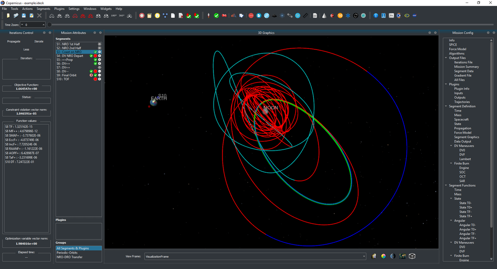

Copernicus Trajectory Design and Optimization System
The Copernicus Project started at the University of Texas at Austin in August 2001. In June 2002, a grant from the NASA Johnson Space Center (JSC) was used to develop the first prototype which was completed in August 2004. In the interim, support was also received from NASA's In Space Propulsion Program and from the Flight Dynamics Vehicle Branch of Goddard Spaceflight Center. The first operational version was completed in March 2006 (v1.0). The initial development team consisted of Dr. Cesar Ocampo and graduate students at the University of Texas at Austin Department of Aerospace Engineering and Engineering Mechanics. Since March 2007, primary development of Copernicus has been at the Flight Mechanics and Trajectory Design Branch of JSC.
The current version of Copernicus is 5.1 (released March 4, 2021).
